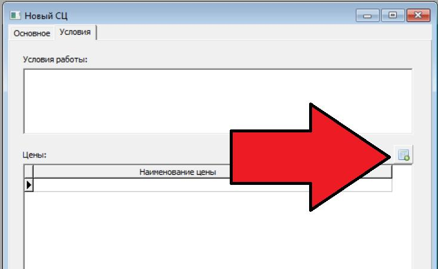

на 18 ноября 2020 г
ВНИМАНИЕ !
Поправил таблицу цен в карточке сервисного центра. Теперь при создании нового сервисного центра эта таблица пуста, но появилась возможность скопировать данные с любого другого сервисного центра с помощью специальной кнопки:

Учтите:
перед копированием новая карточка должна быть записана (нужно нажать кнопку «Записать»)
если вы копируете данные в не пустую таблицу — все старые данные будут удалены
конечно же копирование будет выполнено только в том случае, если в карточке, из которой копируются данные, есть записи о ценах.